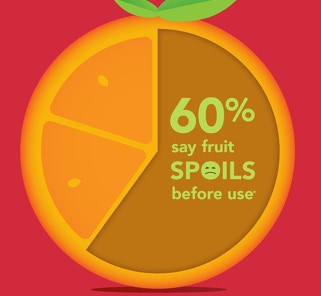

FreshPatch - Revolutionizing Fruit Labeling
FreshPatch is not just any ordinary fruit sticker - it is a masterpiece of design and technology. With its high-quality, breathable, and moisture-resistant materials, it creates a unique microclimate around your fruits, effectively limiting the amount of oxygen that reaches them. This results in a remarkable increase in the shelf-life of your fruits, ensuring that they stay fresh and juicy for much longer.
Statistics of Fruit Wastage
In the India alone, from farm to fridge, 30% - 40% of fresh fruits and vegetables go to waste. That's an annual loss in the hundreds of billions of Indian Rupee. It's time for StixFresh, the all-natural way to safely and easily extend the shelf life of fruit by up to 14 days.
How does FreshPatch even work?
The FreshPatch sticker's all-natural coating, made up of specially sourced wax and other natural ingredients, creates a protective layer around your fruit. We have shown that by slowing down the ripening process, FreshPatch can extend the freshness of many fruits by up to 14 days. These same studies show that fruits treated with the FreshPatch sticker have increased sweetness, higher retention of moisture, as well as sustained cellular structure resulting in increased firmness.
Does FreshPatch work on all fruit?
FreshPatch has been tested to work on apples, pears, avocados, dragon fruits, kiwis, mangoes, oranges and other citrus goodies. And we're always working towards adding to the list. We hope you'll experiment with FreshPatch stickers in your home and let us know what you find out!
Is FreshPatch safe? Any harmful ingredients on the sticker?
Our mission is to always use all-natural, chemical-free, totally safe ingredients to keep your fruit fresh longer. Rest assured, the ingredients used in FreshPatch meet GRAS (Generally Recognized as Safe) requirements in accordance with the FDA.
When does the sticker get applied?
One of the many benefits of FreshPatch stickers is that they can be applied anywhere along the post-harvest process — packaging, shipping, distribution, retail, and even in your own kitchen.
When should I take the sticker off?
We recommend keeping the sticker on your fruit until just before you're ready to eat it.
Should I purchase produce ripe or still green?
Our studies have shown it's best to apply FreshPatch stickers when the fruit is green, or at least early in its ripening stage.
How much longer will my produce last?
With FreshPatch stickers, we expect your fruit's shelf life to be extended by 2 to 4 times longer.
Does fruit ripen with the sticker on?
Yes, fruit continues to ripen while the sticker is on it. Our studies have shown that the natural ingredients in FreshPatch inhibit bacterial growth, slowing down spoilage and over-ripening.
Can I reuse the sticker?
We do not recommend re-using the sticker. Once the sticker has been removed it may not stick to your next piece of fruit. It's best to apply a fresh new sticker to each new piece of fruit.
How long will the formulation last on the sticker?
In our industry, this is referred to as “shelf life”. Initial studies have shown that once the sticker is removed from its packaging, it could last up to several weeks. We are conducting additional testing to achieve better data around the shelf life of the stickers. We're also working to optimize the formulation for increased shelf life.
I just ate part of the sticker… should I be worried?
No worries at all. FreshPatch is made of all-natural ingredients which meet GRAS (Generally Recognized as Safe) requirements in accordance with the FDA. You'll be just fine.